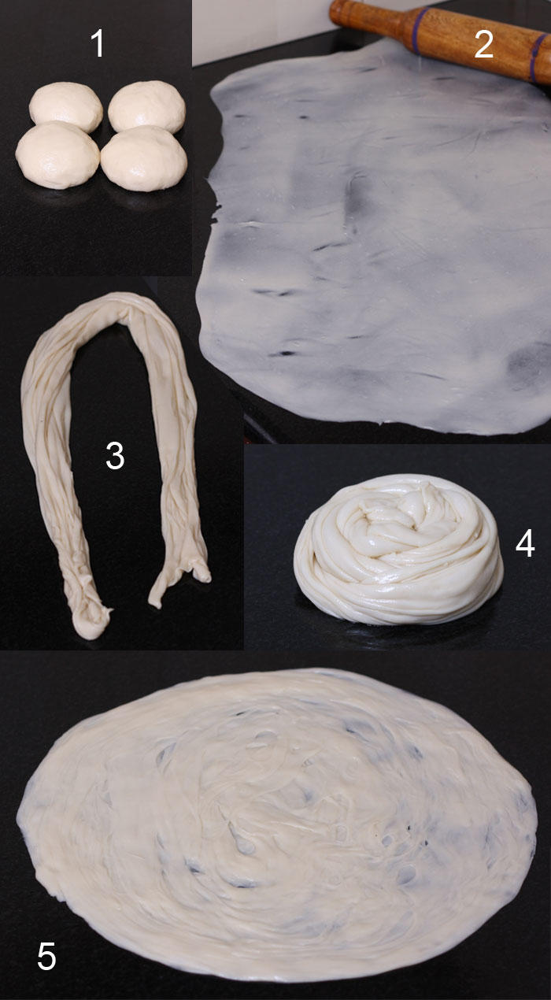

Porotta

Description
Kerala porotta, popularly known as paratha or parotta, is a delicacy from the state of Kerala. The scrumptious gently cooked, mild flavored recipes from the Malabar region of Kerala are certainly a pride to South Indian cooking. Generally, the Malabar cuisine is popular for its non-vegetarian recipes. However, the porotta recipe takes the top position as far as vegetarian dishes are concerned.
The layered and flakey flat breads just melt away in the mouth. This bread is similar to Laccha paratha made in North India. The difference between the two is that Kerala parotta is made of maida (all purpose flour) and needs more amount of kneading to make soft dough. The soft and crunchy outer layer and the cushy inner layers make this porotta really yummy! This recipe requires great patience and care while in process.
Paratha tastes excellent with vegetable Korma or along with any non-vegetarian gravy. Porotta tastes best when it is served hot.
Ingredients
- All purpose flour / Maida - 4 Cups
- Water - 11/4 Cup
- Sugar - 1 Tablespoon
- Salt - To Taste
- Cooking Oil - as required
Steps
- Mix all purpose flour, sugar and salt in a bowl.
- Slowly add water and mix it well using your hands until a loose dough consistency is formed. The dough should be smooth and a little bit sticky but not stiff (add more water or flour depending on the absorbency of the flour)
- Place the dough on a working surface and knead it well until the dough is soft and smooth (about 6-8 minutes). Perfect kneading makes the parotta/paratha soft and puffy when it is cooked.
- Brush the dough with a little cooking oil or ghee. Cover it with a wet cloth so that it doesn’t become dry. Leave it aside for minimum 2 hours.
- After 2 hours, knead the dough again for a few minutes (use oil if it is too sticky). Make nine equal sized balls from the kneaded dough and keep it covered with the wet cloth for another 5 minutes.
- Spread enough oil on the working surface and on the balls. Roll the balls using a roller to get a very thin oval shape. (as shown in photograph given below)
- Spread a little oil on it and pleat length wise from one end to the other. Twist it into a round shape and cover it with the wet cloth for another 5 minutes.
- Heat a flat non-stick pan on medium flame. Take a rolled ball and flatten it again using your palm. Place it on the hot and greased pan. Cook on both sides till the parotta turns slightly brown in colour. Remember to apply a little oil on the paratha before turning to the other side.
- Keep the cooked parotta warm until you finish cooking the remaining parathas. Once three or four porottas are done, pile them together and compress from the sides using your hands to separate the layers. (Do this when the paratha is hot so that they don’t break)
- Serve Kerala parotta hot with korma or any gravy type curry.
Notes
Refer to images below

Return Home